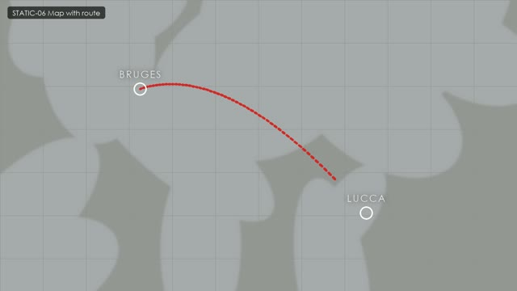

Ba kiểu bản đồ mới trên địa lý thật, và sáu thành phần hoạt hình khác để làm rõ một ý trong video. Bấm Phát ở từng khung, xem xong thì cho mình biết bạn chọn gì.

Cả ba dùng bờ biển thật của Natural Earth (dữ liệu công cộng, không cần ghi nguồn), nhãn bằng EB Garamond, không có khung chữ. Mỗi địa điểm hiện đúng lúc lời dẫn nhắc tên. Dữ liệu vào chỉ là tên và toạ độ, nên dùng lại được cho mọi video.
Bản này đã sửa chỗ khó phân biệt đất và biển: biển có màu riêng và đậm dần về phía bờ, đất sáng hơn. Bấm ba nút trên để so. Phần còn lại giữ nguyên: bờ biển nét mực có các đường viền nước như atlas cổ, vùng Bỉ ngày nay được tô nhẹ, đường đi là hàng chấm đỏ nâu có điểm đầu chạy, máy quay đẩy chậm vào hai thành phố.
Hợp với tranh trước 1900 và phần lớn video. Gần với tranh minh hoạ trong sách nguồn.
Bản đồ tối, địa hình nổi thật (thấy rõ dãy Alps giữa hai thành phố). Một vệt sáng quét qua làm lộ đất liền, đúng ý tên kênh. Đường đi phát sáng, máy quay vừa đẩy vào vừa nghiêng nhẹ.
Hợp với hành trình, chuyến đi biển, đoạn kịch tính. Đây là kiểu khó xây nhất.
Mở từ quả địa cầu xoay về châu Âu rồi chuyển sang bản đồ phẳng. Nền sáng, đất liền như tờ giấy cắt có bóng đổ nhẹ, một màu nhấn duy nhất, chấm địa điểm nhấp một nhịp khi được nhắc tên. Máy quay đứng yên khi có chữ.
Hợp với địa điểm thời hiện đại và cảnh ngắn.
Mỗi cái làm rõ một loại thông tin. Ví dụ đều lấy từ lời dẫn video Arnolfini. Nghiên cứu đếm được trong 91 câu lời dẫn: khoảng 14 câu cần gọi tên một phần của tranh, 8 câu có ngày tháng, 6 câu về quan hệ gia đình hay người bảo trợ, 5 câu có số lượng.
Chữ nghiêng nhỏ đặt ngay cạnh chi tiết, không khung, không gạch nối, hiện lần lượt theo lời dẫn. Tranh tối đi một chút để chữ nổi.
Một đường mảnh, từng mốc mọc lên theo thứ tự lời dẫn, mốc của bức tranh sáng lên sau cùng.
600 so với 2.000 tấm da sóc: mỗi chấm là 50 tấm, hai hàng chấm chạy ra để thấy ngay gấp hơn ba lần.
Chỉ có tên và năm, nối bằng nét mảnh, hiện từng mối quan hệ một: ai thuê ai, ai cưới ai, ai vẽ ai.
Ảnh màu tan sang ảnh hồng ngoại rồi trở lại, tranh đứng yên, góc dưới ghi tên kỹ thuật. Ảnh hồng ngoại ở đây là giả lập từ ảnh màu, chỉ để xem chuyển động.
Máy quay tiến vào dòng chữ ký trên tường, phần còn lại tối đi, bản dịch hiện bên dưới. Dùng được cho thư từ, sổ sách, bản kê tài sản.
Đây là bản mẫu dựng bằng trình duyệt để xem cách chuyển động. Bản thật sẽ do engine của video vẽ từng khung, nên chi tiết nhỏ có thể khác. Báo cáo nghiên cứu đầy đủ nằm ở docs/design/research/R10_explainer_components.md.